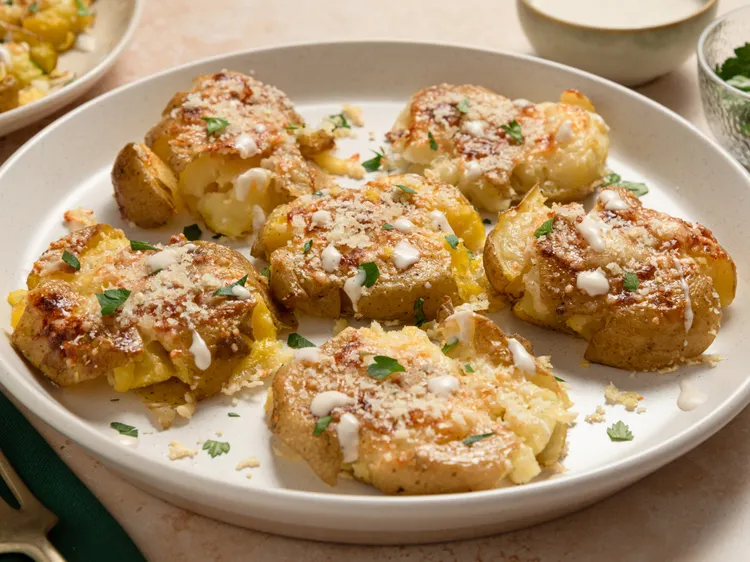

Home
Caesar Potato Salad

Description
Caesar Salad Smashed Potatoes combine all the tangy, cheesy goodness of a Caesar salad with the crispy comfort of roasted potatoes. Packed with Parmesan flavor, these smashed potatoes make a perfect side dish or party appetizer everyone will crave.
Ingredients
- 1 ½ pounds baby potatoes
- ¾ cup grated Parmesan cheese, divided
- ¼ cup Caesar dressing, divided, plus more for serving
- Salt, to taste
- Chopped parsley or romaine, for garnish
Steps
- Preheat the oven to 425°F (220°C)
- Boil baby potatoes in salted water until fork-tender, about 15 minutes. Drain and let cool slightly.
- Sprinkle ¼ cup Parmesan cheese all over a parchment-lined baking sheet.
- Arrange potatoes on top and gently smash with the bottom of a glass. Using half of the dressing, brush each potato and sprinkle on another ¼ cup Parmesan cheese.
- Bake until golden and crispy, 15 to 20 minutes.
- Remove potatoes from the oven, brush on remaining dressing, and sprinkle on remaining cheese.
- Serve with additional dressing for dipping. Garnish with chopped parsley or shredded romaine. Enjoy!